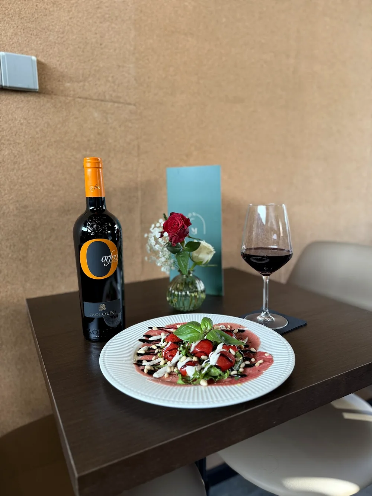
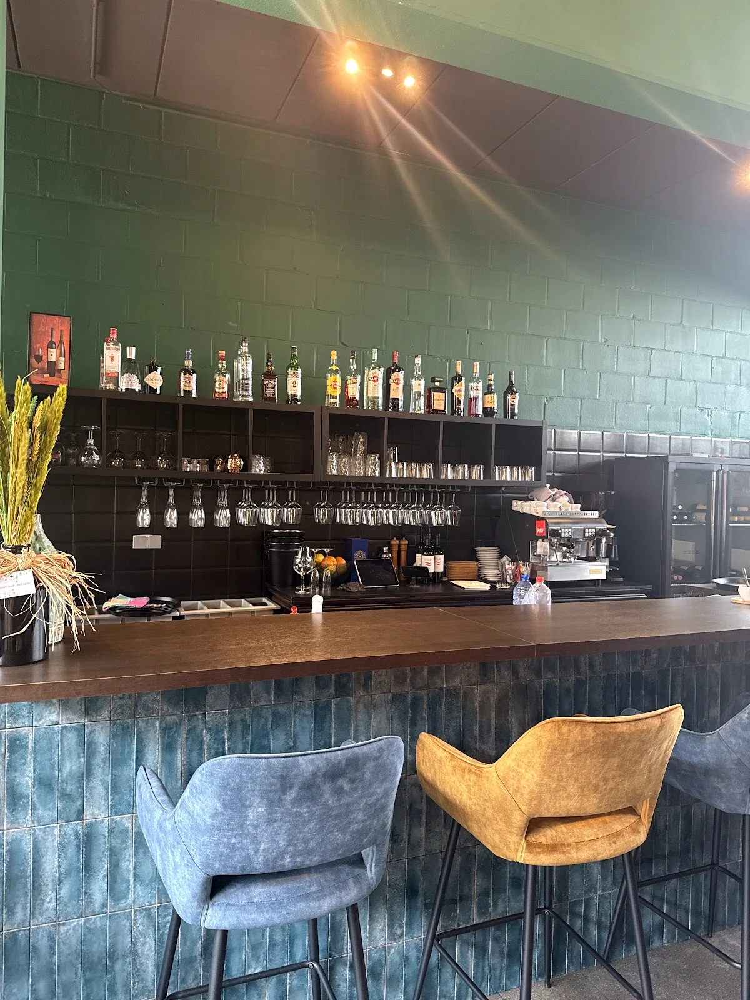
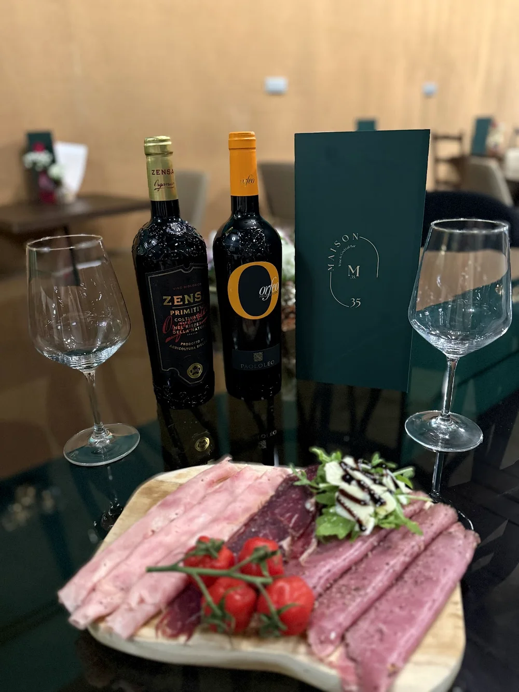
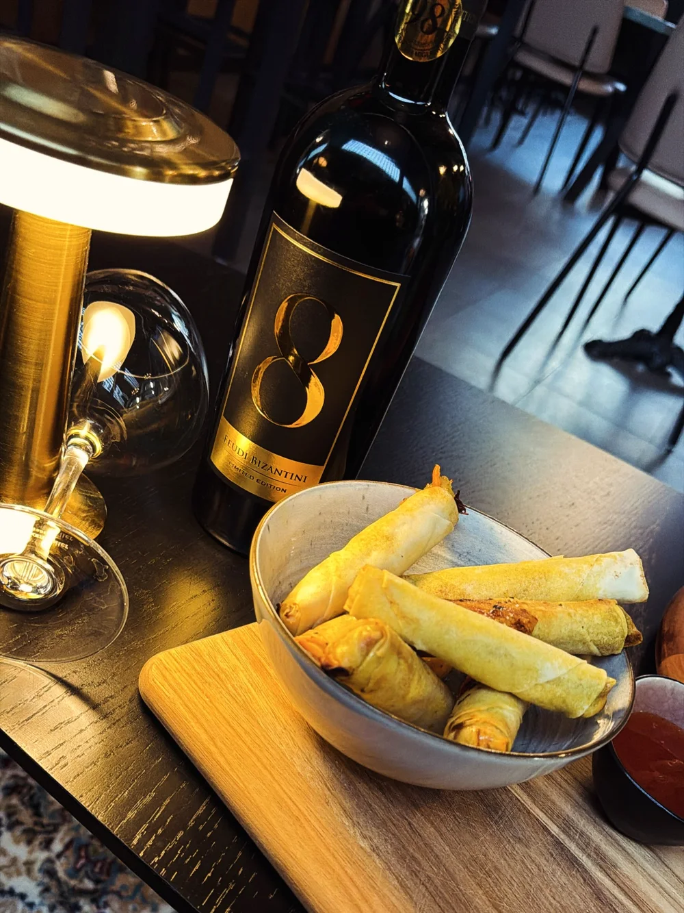
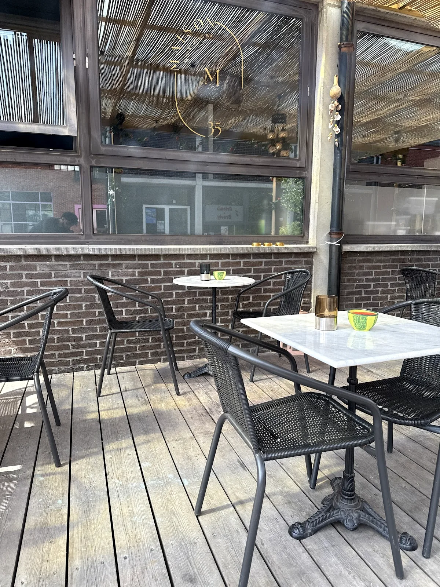

Een aanraderCarpaccio
€ 17,50Rundercarpaccio op z'n best, met parmezaan, pijnboompitten, rucola en een vleugje truffelmayonaise.

Een goed glas wijn, een cocktail die juist zit en hapjes om te delen. Of net niet. Binnen aan onze groene toog, of buiten op het terras aan de Stadswal.
Vandaag open vanaf 15:00
Kleine gerechten om samen van te genieten bij een glas. Fris, eerlijk en met liefde bereid.

Een aanraderRundercarpaccio op z'n best, met parmezaan, pijnboompitten, rucola en een vleugje truffelmayonaise.
 Bij een glaasje
Bij een glaasjeEen selectie van fijne kazen. Perfect om samen van te genieten tijdens een glaasje wijn.

Om te delenEen diversiteit van fijne vleeswaren, om te delen en subliem bij een lekker glas wijn.
 Fris
FrisSappige tomaat, romige mozzarella en verse basilicum. Eenvoud op z'n lekkerst.
 Uit de oven
Uit de ovenKrokante aardappeltjes uit de oven, met verse huisbereide cocktailsaus.

HuisgemaaktKrokant, vers en echt zelf gerold. Kies voor kip, veggie of een mix van allebei.
Ook op de kaart: vitello tonnato, bruschetta, nacho's, hummus, aubergines in look en meer.


Twijfel je? Vraag het gerust, we helpen je graag kiezen bij wat je eet. En elke maand zetten we een ander bier in de kijker.
Aan de toog bij onze groene tegels, in de zetel met een glas rood, of buiten in de zon onder de pergola. Kies maar waar je zit.
 Binnen
Binnen Zonneterras
Zonneterras Lounge
LoungeVerjaardag, team of gewoon een goeie reden: ons zaaltje is te huur. Vraag gerust wat er kan.
Alle 41 reviews op Google geven ons vijf sterren. Hier lees je er een paar.
★★★★★"Veel keuze aan dranken, fris, bier, cocktails en mocktails, allemaal lekker en mooi klaargemaakt. Toffe bediening, gezellige sfeer en een leuk zonneterras en prachtig interieur!"
★★★★★"Een gezellige drankgelegenheid in hartje Beringen centrum met veel keuze tussen drank en lekkere hapjes. Heel vriendelijke ontvangst door Dokan en zijn team."
★★★★★"Top zaak lekkere wijnen en de carpaccio is een aanrader !"

Stadswal 14, BeringenIn hartje Beringen, aan de Stadswal. Met een groep? Bel even, dan houden we een tafel voor je vrij.
Ik maakte deze demo voor jullie om te tonen wat er kan. Na een kort gesprek maak ik er iets veel persoonlijkers van, helemaal naar jullie wens.
Vrijblijvend. Ik kom langs of we bellen.
Op maat, op jullie eigen domein.
Geen voorschot. Jullie betalen pas als alles klaar is.
Hosting, domeinnaam en kleine wijzigingen, zoals nieuwe openingsuren.
Omdat een voorbeeld meer zegt dan een mail. Zo zien jullie meteen wat er kan, en het kost jullie niets.
Nee. Het gesprek is vrijblijvend. Vinden jullie het niks, dan is het daarmee gedaan.
Na ons gesprek staat jullie site binnen 10 tot 14 dagen online.
Zeker. Jullie domeinnaam kan gewoon blijven, de nieuwe site komt in de plaats van de oude.
Nee, dat doe ik op basis van ons gesprek. Eigen foto's zijn mooi meegenomen, maar niet nodig om te starten.